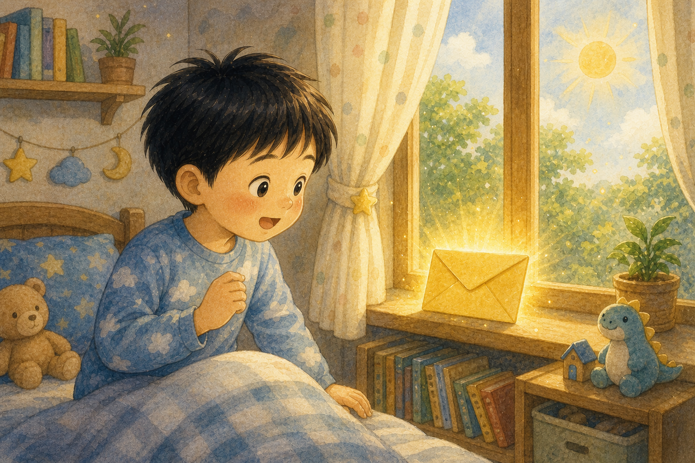
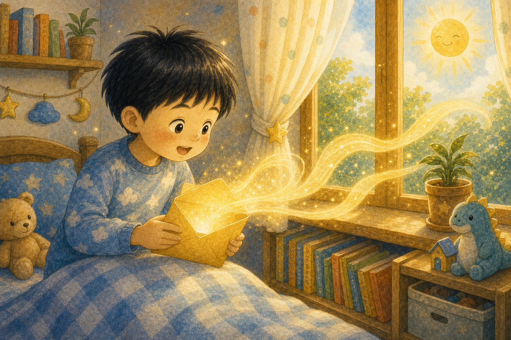
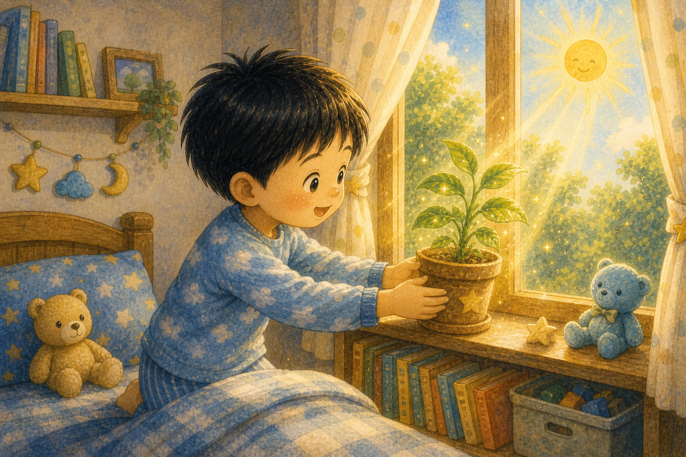
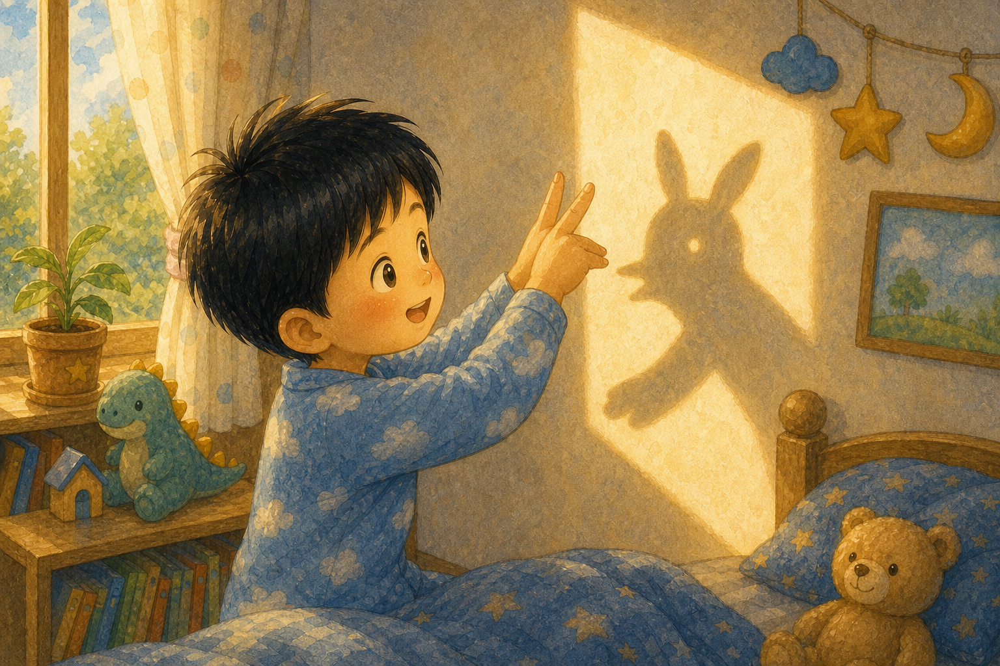
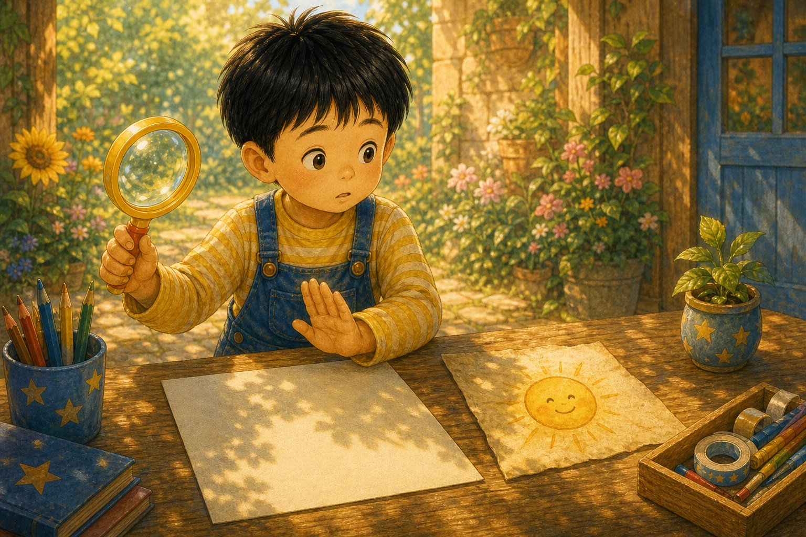
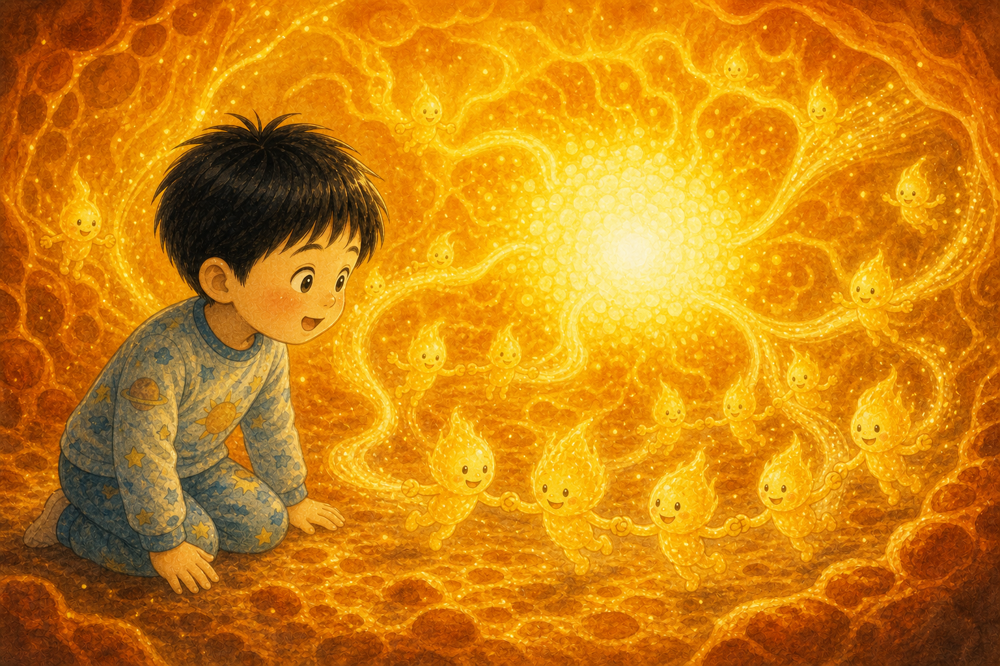
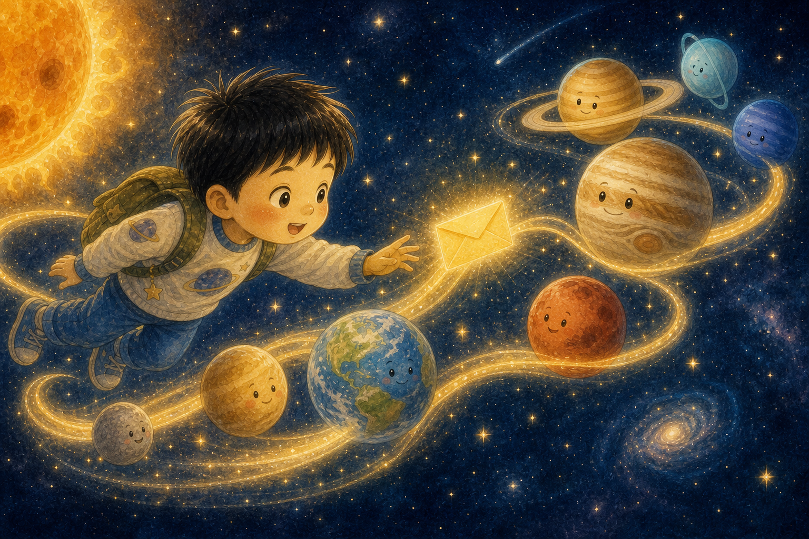
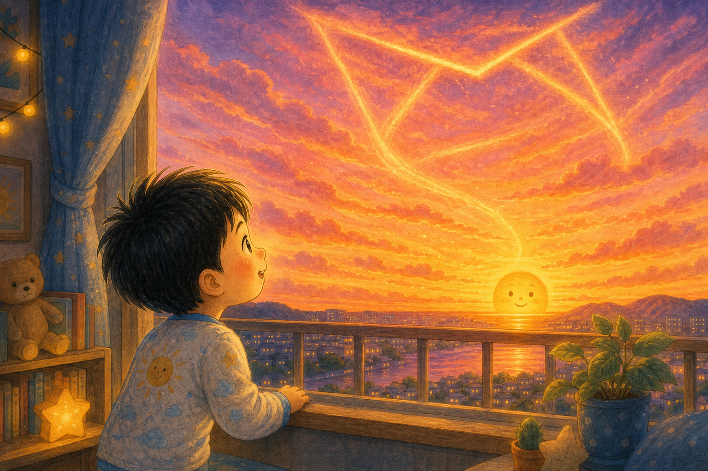
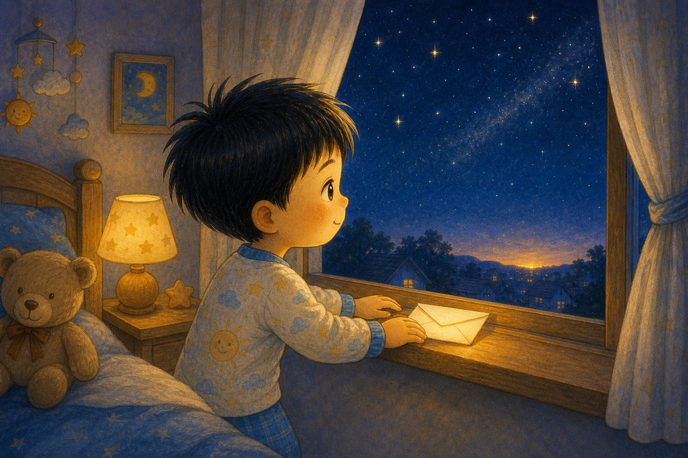

노란 편지 봉투
아침 창가에서 하늘이는 노란 편지 봉투를 발견했어요. 봉투에는 "해님에게서"라고 빛나는 글씨가 적혀 있었지요.
"오늘의 따뜻함을 배달합니다."

아침 창가에서 하늘이는 노란 편지 봉투를 발견했어요. 봉투에는 "해님에게서"라고 빛나는 글씨가 적혀 있었지요.
"오늘의 따뜻함을 배달합니다."

하늘이가 봉투를 열자 햇빛 글씨가 방 안으로 펼쳐졌어요. 글씨는 책상, 이불, 작은 화분 위를 부드럽게 지나갔답니다.
빛은 조용하지만 멀리까지 닿았어요.

하늘이는 햇빛을 받은 화분 잎이 반짝이는 것을 보았어요. 작은 잎은 해님 편지를 읽은 듯 힘차게 고개를 들었지요.
따뜻한 빛은 자라나는 힘을 주었어요.

하늘이가 손을 들자 벽에 그림자가 생겼어요. 해님은 빛이 있는 곳에는 그림자도 함께 놀러 온다고 알려 주었답니다.
빛을 보면 그림자도 이해할 수 있어요.

하늘이는 돋보기 장난감을 들고 햇빛을 모으려다 멈추었어요. 해님 편지에는 "빛은 조심히 다루어야 해"라고 적혀 있었지요.
따뜻함도 안전하게 만나는 게 중요해요.

꿈속에서 하늘이는 해님 속 작은 불꽃들이 서로 손을 잡는 모습을 보았어요. 그 힘이 빛과 열이 되어 멀리 날아갔답니다.
해님은 빛을 만드는 아주 큰 불덩이였어요.

빛 편지는 수성, 금성, 지구, 화성을 지나 더 먼 행성 친구들에게도 갔어요. 하늘이는 빛의 여행을 따라 눈을 반짝였지요.
한 줄기 빛도 긴 여행을 할 수 있어요.
하늘이는 해님에게 물었어요. "매일 비추면 힘들지 않아?" 해님은 웃으며 꾸준히 나누는 일이 자기의 기쁨이라고 했답니다.
좋아하는 일을 꾸준히 하면 마음도 빛나요.

저녁이 되자 하늘이는 주황색 노을을 보았어요. 해님은 하루를 마치며 마지막 편지를 하늘에 넓게 펼친 것이었지요.
노을은 해님의 다정한 인사였어요.

하늘이는 창가에 답장을 놓았어요. "해님, 내일도 안전하게 반짝여 줘." 밤하늘은 조용히 그 약속을 품었답니다.
아침이 오면 따뜻한 편지도 다시 찾아올 거예요.